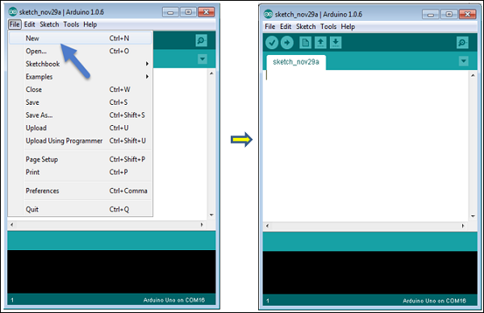
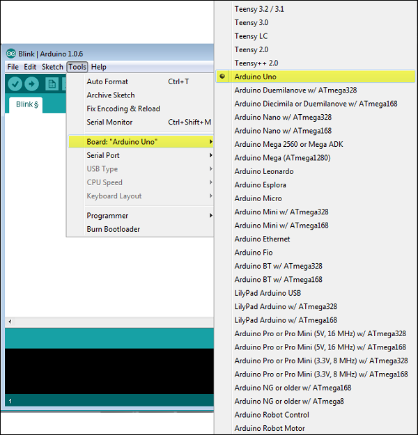
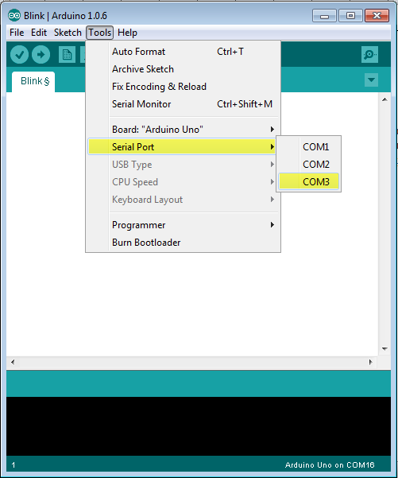
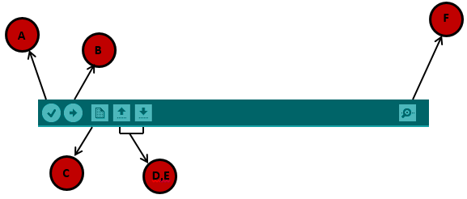
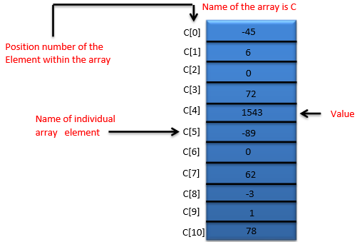

Arduino is a prototype platform (open-source) based on an easy-to-use hardware and software. It consists of a circuit board, which can be programed (referred to as a microcontroller) and a ready-made software called Arduino IDE (Integrated Development Environment), which is used to write and upload the computer code to the physical board.
The key features are −
Arduino boards are able to read analog or digital input signals from different sensors and turn it into an output such as activating a motor, turning LED on/off, connect to the cloud and many other actions.
You can control your board functions by sending a set of instructions to the microcontroller on the board via Arduino IDE (referred to as uploading software).
Unlike most previous programmable circuit boards, Arduino does not need an extra piece of hardware (called a programmer) in order to load a new code onto the board. You can simply use a USB cable.
Additionally, the Arduino IDE uses a simplified version of C++, making it easier to learn to program.
Finally, Arduino provides a standard form factor that breaks the functions of the micro-controller into a more accessible package.
Various kinds of Arduino boards are available depending on different microcontrollers used. However, all Arduino boards have one thing in common: they are programed through the Arduino IDE.
The differences are based on the number of inputs and outputs (the number of sensors, LEDs, and buttons you can use on a single board), speed, operating voltage, form factor etc. Some boards are designed to be embedded and have no programming interface (hardware), which you would need to buy separately. Some can run directly from a 3.7V battery, others need at least 5V.
Here is a list of different Arduino boards available.
Arduino boards based on ATMEGA328 microcontroller
| Board Name | Operating Volt | Clock Speed | Digital i/o | Analog Inputs | PWM | UART | Programming Interface |
|---|---|---|---|---|---|---|---|
| Arduino Uno R3 | 5V | 16MHz | 14 | 6 | 6 | 1 | USB via ATMega16U2 |
| Arduino Uno R3 SMD | 5V | 16MHz | 14 | 6 | 6 | 1 | USB via ATMega16U2 |
| Red Board | 5V | 16MHz | 14 | 6 | 6 | 1 | USB via FTDI |
| Arduino Pro 3.3v/8 MHz | 3.3V | 8MHz | 14 | 6 | 6 | 1 | FTDI-Compatible Header |
| Arduino Pro 5V/16MHz | 5V | 16MHz | 14 | 6 | 6 | 1 | FTDI-Compatible Header |
| Arduino mini 05 | 5V | 16MHz | 14 | 8 | 6 | 1 | FTDI-Compatible Header |
| Arduino Pro mini 3.3v/8mhz | 3.3V | 8MHz | 14 | 8 | 6 | 1 | FTDI-Compatible Header |
| Arduino Pro mini 5v/16mhz | 5V | 16MHz | 14 | 8 | 6 | 1 | FTDI-Compatible Header |
| Arduino Ethernet | 5V | 16MHz | 14 | 6 | 6 | 1 | FTDI-Compatible Header |
| Arduino Fio | 3.3V | 8MHz | 14 | 8 | 6 | 1 | FTDI-Compatible Header |
| LilyPad Arduino 328 main board | 3.3V | 8MHz | 14 | 6 | 6 | 1 | FTDI-Compatible Header |
| LilyPad Arduino simple board | 3.3V | 8MHz | 9 | 4 | 5 | 0 | FTDI-Compatible Header |
Arduino boards based on ATMEGA32u4 microcontroller
| Board Name | Operating Volt | Clock Speed | Digital i/o | Analog Inputs | PWM | UART | Programming Interface |
|---|---|---|---|---|---|---|---|
| Arduino Leonardo | 5V | 16MHz | 20 | 12 | 7 | 1 | Native USB |
| Pro micro 5V/16MHz | 5V | 16MHz | 14 | 6 | 6 | 1 | Native USB |
| Pro micro 3.3V/8MHz | 5V | 16MHz | 14 | 6 | 6 | 1 | Native USB |
| LilyPad Arduino USB | 3.3V | 8MHz | 14 | 6 | 6 | 1 | Native USB |
Arduino boards based on ATMEGA2560 microcontroller
| Board Name | Operating Volt | Clock Speed | Digital i/o | Analog Inputs | PWM | UART | Programming Interface |
|---|---|---|---|---|---|---|---|
| Arduino Mega 2560 R3 | 5V | 16MHz | 54 | 16 | 14 | 4 | USB via ATMega16U2B |
| Mega Pro 3.3V | 3.3V | 8MHz | 54 | 16 | 14 | 4 | FTDI-Compatible Header |
| Mega Pro 5V | 5V | 16MHz | 54 | 16 | 14 | 4 | FTDI-Compatible Header |
| Mega Pro Mini 3.3V | 3.3V | 8MHz | 54 | 16 | 14 | 4 | FTDI-Compatible Header |
Arduino boards based on AT91SAM3X8E microcontroller
| Board Name | Operating Volt | Clock Speed | Digital i/o | Analog Inputs | PWM | UART | Programming Interface |
|---|---|---|---|---|---|---|---|
| Arduino Mega 2560 R3 | 3.3V | 84MHz | 54 | 12 | 12 | 4 | USB native |
In this chapter, we will learn about the different components on the Arduino board. We will study the Arduino UNO board because it is the most popular board in the Arduino board family. In addition, it is the best board to get started with electronics and coding. Some boards look a bit different from the one given below, but most Arduinos have majority of these components in common.

| 1 |
Power USB Arduino board can be powered by using the USB cable from your computer. All you need to do is connect the USB cable to the USB connection (1). |
| 2 | Power (Barrel Jack) Arduino boards can be powered directly from the AC mains power supply by connecting it to the Barrel Jack (2). |
| 3 | Voltage Regulator The function of the voltage regulator is to control the voltage given to the Arduino board and stabilize the DC voltages used by the processor and other elements. |
| 4 | Crystal Oscillator The crystal oscillator helps Arduino in dealing with time issues. How does Arduino calculate time? The answer is, by using the crystal oscillator. The number printed on top of the Arduino crystal is 16.000H9H. It tells us that the frequency is 16,000,000 Hertz or 16 MHz. |
| 5? 17 | Arduino Reset You can reset your Arduino board, i.e., start your program from the beginning. You can reset the UNO board in two ways. First, by using the reset button (17) on the board. Second, you can connect an external reset button to the Arduino pin labelled RESET (5). |
| 6, 7, 8, 9 | Pins (3.3, 5, GND, Vin)
|
| 10 | Analog pins The Arduino UNO board has five analog input pins A0 through A5. These pins can read the signal from an analog sensor like the humidity sensor or temperature sensor and convert it into a digital value that can be read by the microprocessor. |
| 11 | Main microcontroller Each Arduino board has its own microcontroller (11). You can assume it as the brain of your board. The main IC (integrated circuit) on the Arduino is slightly different from board to board. The microcontrollers are usually of the ATMEL Company. You must know what IC your board has before loading up a new program from the Arduino IDE. This information is available on the top of the IC. For more details about the IC construction and functions, you can refer to the data sheet. |
| 12 | ICSP pin Mostly, ICSP (12) is an AVR, a tiny programming header for the Arduino consisting of MOSI, MISO, SCK, RESET, VCC, and GND. It is often referred to as an SPI (Serial Peripheral Interface), which could be considered as an "expansion" of the output. Actually, you are slaving the output device to the master of the SPI bus. |
| 13 | Power LED indicator This LED should light up when you plug your Arduino into a power source to indicate that your board is powered up correctly. If this light does not turn on, then there is something wrong with the connection. |
| 14 | TX and RX LEDs On your board, you will find two labels: TX (transmit) and RX (receive). They appear in two places on the Arduino UNO board. First, at the digital pins 0 and 1, to indicate the pins responsible for serial communication. Second, the TX and RX led (13). The TX led flashes with different speed while sending the serial data. The speed of flashing depends on the baud rate used by the board. RX flashes during the receiving process. |
| 15 | Digital I/O The Arduino UNO board has 14 digital I/O pins (15) (of which 6 provide PWM (Pulse Width Modulation) output. These pins can be configured to work as input digital pins to read logic values (0 or 1) or as digital output pins to drive different modules like LEDs, relays, etc. The pins labeled “~” can be used to generate PWM. |
| 16 | AREF AREF stands for Analog Reference. It is sometimes, used to set an external reference voltage (between 0 and 5 Volts) as the upper limit for the analog input pins. |
After learning about the main parts of the Arduino UNO board, we are ready to learn how to set up the Arduino IDE. Once we learn this, we will be ready to upload our program on the Arduino board.
In this section, we will learn in easy steps, how to set up the Arduino IDE on our computer and prepare the board to receive the program via USB cable.
Step 1 − First you must have your Arduino board (you can choose your favorite board) and a USB cable. In case you use Arduino UNO, Arduino Duemilanove, Nano, Arduino Mega 2560, or Diecimila, you will need a standard USB cable (A plug to B plug), the kind you would connect to a USB printer as shown in the following image.
In case you use Arduino Nano, you will need an A to Mini-B cable instead as shown in the following image.
Step 2 − Download Arduino IDE Software.
You can get different versions of Arduino IDE from the Download page on the Arduino Official website. You must select your software, which is compatible with your operating system (Windows, IOS, or Linux). After your file download is complete, unzip the file.
Step 3 − Power up your board.
The Arduino Uno, Mega, Duemilanove and Arduino Nano automatically draw power from either, the USB connection to the computer or an external power supply. If you are using an Arduino Diecimila, you have to make sure that the board is configured to draw power from the USB connection. The power source is selected with a jumper, a small piece of plastic that fits onto two of the three pins between the USB and power jacks. Check that it is on the two pins closest to the USB port.
Connect the Arduino board to your computer using the USB cable. The green power LED (labeled PWR) should glow.
Step 4 − Launch Arduino IDE.
After your Arduino IDE software is downloaded, you need to unzip the folder. Inside the folder, you can find the application icon with an infinity label (application.exe). Double-click the icon to start the IDE.
Step 5 − Open your first project.
Once the software starts, you have two options −
- Create a new project.
- Open an existing project example.
To create a new project, select File → New.
To open an existing project example, select File → Example → Basics → Blink.
Here, we are selecting just one of the examples with the name Blink. It turns the LED on and off with some time delay. You can select any other example from the list.
Step 6 − Select your Arduino board.
To avoid any error while uploading your program to the board, you must select the correct Arduino board name, which matches with the board connected to your computer.
Go to Tools → Board and select your board.
Here, we have selected Arduino Uno board according to our tutorial, but you must select the name matching the board that you are using.
Step 7 − Select your serial port.
Select the serial device of the Arduino board. Go to Tools → Serial Port menu. This is likely to be COM3 or higher (COM1 and COM2 are usually reserved for hardware serial ports). To find out, you can disconnect your Arduino board and re-open the menu, the entry that disappears should be of the Arduino board. Reconnect the board and select that serial port.
Step 8 − Upload the program to your board.
Before explaining how we can upload our program to the board, we must demonstrate the function of each symbol appearing in the Arduino IDE toolbar.
A − Used to check if there is any compilation error.
B − Used to upload a program to the Arduino board.
C − Shortcut used to create a new sketch.
D − Used to directly open one of the example sketch.
E − Used to save your sketch.
F − Serial monitor used to receive serial data from the board and send the serial data to the board.
Now, simply click the "Upload" button in the environment. Wait a few seconds; you will see the RX and TX LEDs on the board, flashing. If the upload is successful, the message "Done uploading" will appear in the status bar.
Note − If you have an Arduino Mini, NG, or other board, you need to press the reset button physically on the board, immediately before clicking the upload button on the Arduino Software.
In this chapter, we will study in depth, the Arduino program structure and we will learn more new terminologies used in the Arduino world. The Arduino software is open-source. The source code for the Java environment is released under the GPL and the C/C++ microcontroller libraries are under the LGPL.
Sketch − The first new terminology is the Arduino program called “sketch”.
Structure
Arduino programs can be divided in three main parts: Structure, Values (variables and constants), and Functions. In this tutorial, we will learn about the Arduino software program, step by step, and how we can write the program without any syntax or compilation error.
Let us start with the Structure. Software structure consist of two main functions −
- Setup( ) function
- Loop( ) function

setup ( ) {
}
PURPOSE − The setup() function is called when a sketch starts. Use it to initialize the variables, pin modes, start using libraries, etc. The setup function will only run once, after each power up or reset of the Arduino board.
Void Loop ( ) {
}
PURPOSE − After creating a setup() function, which initializes and sets the initial values, the loop() function does precisely what its name suggests, and loops consecutively, allowing your program to change and respond. Use it to actively control the Arduino board.
Data types in C refers to an extensive system used for declaring variables or functions of different types. The type of a variable determines how much space it occupies in the storage and how the bit pattern stored is interpreted.
The following table provides all the data types that you will use during Arduino programming.
| void | Boolean | char | Unsigned char | byte | int | Unsigned int | word |
| long | Unsigned long | short | float | double | array | String-char array | String-object |
void
The void keyword is used only in function declarations. It indicates that the function is expected to return no information to the function from which it was called.
Example
Void Loop ( ) {
// rest of the code
}
Boolean
A Boolean holds one of two values, true or false. Each Boolean variable occupies one byte of memory.
Example
boolean val = false ; // declaration of variable with type boolean and initialize it with false
boolean state = true ; // declaration of variable with type boolean and initialize it with true
Char
A data type that takes up one byte of memory that stores a character value. Character literals are written in single quotes like this: 'A' and for multiple characters, strings use double quotes: "ABC".
However, characters are stored as numbers. You can see the specific encoding in the ASCII chart. This means that it is possible to do arithmetic operations on characters, in which the ASCII value of the character is used. For example, 'A' + 1 has the value 66, since the ASCII value of the capital letter A is 65.
Example
Char chr_a = ‘a’ ;//declaration of variable with type char and initialize it with character a
Char chr_c = 97 ;//declaration of variable with type char and initialize it with character 97

unsigned char
Unsigned char is an unsigned data type that occupies one byte of memory. The unsigned char data type encodes numbers from 0 to 255.
Example
Unsigned Char chr_y = 121 ; // declaration of variable with type Unsigned char and initialize it with character y
byte
A byte stores an 8-bit unsigned number, from 0 to 255.
Example
byte m = 25 ;//declaration of variable with type byte and initialize it with 25
int
Integers are the primary data-type for number storage. int stores a 16-bit (2-byte) value. This yields a range of -32,768 to 32,767 (minimum value of -2^15 and a maximum value of (2^15) - 1).
The int size varies from board to board. On the Arduino Due, for example, an int stores a 32-bit (4-byte) value. This yields a range of -2,147,483,648 to 2,147,483,647 (minimum value of -2^31 and a maximum value of (2^31) - 1).
Example
int counter = 32 ;// declaration of variable with type int and initialize it with 32
Unsigned int
Unsigned ints (unsigned integers) are the same as int in the way that they store a 2 byte value. Instead of storing negative numbers, however, they only store positive values, yielding a useful range of 0 to 65,535 (2^16) - 1). The Due stores a 4 byte (32-bit) value, ranging from 0 to 4,294,967,295 (2^32 - 1).
Example
Unsigned int counter = 60 ; // declaration of variable with
type unsigned int and initialize it with 60
Word
On the Uno and other ATMEGA based boards, a word stores a 16-bit unsigned number. On the Due and Zero, it stores a 32-bit unsigned number.
Example
word w = 1000 ;//declaration of variable with type word and initialize it with 1000
Long
Long variables are extended size variables for number storage, and store 32 bits (4 bytes), from -2,147,483,648 to 2,147,483,647.
Example
Long velocity = 102346 ;//declaration of variable with type Long and initialize it with 102346
unsigned long
Unsigned long variables are extended size variables for number storage and store 32 bits (4 bytes). Unlike standard longs, unsigned longs will not store negative numbers, making their range from 0 to 4,294,967,295 (2^32 - 1).
Example
Unsigned Long velocity = 101006 ;// declaration of variable with
type Unsigned Long and initialize it with 101006
short
A short is a 16-bit data-type. On all Arduinos (ATMega and ARM based), a short stores a 16-bit (2-byte) value. This yields a range of -32,768 to 32,767 (minimum value of -2^15 and a maximum value of (2^15) - 1).
Example
short val = 13 ;//declaration of variable with type short and initialize it with 13
float
Data type for floating-point number is a number that has a decimal point. Floating-point numbers are often used to approximate the analog and continuous values because they have greater resolution than integers.
Floating-point numbers can be as large as 3.4028235E+38 and as low as -3.4028235E+38. They are stored as 32 bits (4 bytes) of information.
Example
float num = 1.352;//declaration of variable with type float and initialize it with 1.352
double
On the Uno and other ATMEGA based boards, Double precision floating-point number occupies four bytes. That is, the double implementation is exactly the same as the float, with no gain in precision. On the Arduino Due, doubles have 8-byte (64 bit) precision.
Example
double num = 45.352 ;// declaration of variable with type double and initialize it with 45.352
Before we start explaining the variable types, a very important subject we need to make sure, you fully understand is called the variable scope.
What is Variable Scope?
Variables in C programming language, which Arduino uses, have a property called scope. A scope is a region of the program and there are three places where variables can be declared. They are −
- Inside a function or a block, which is called local variables.
- In the definition of function parameters, which is called formal parameters.
- Outside of all functions, which is called global variables.
Local Variables
Variables that are declared inside a function or block are local variables. They can be used only by the statements that are inside that function or block of code. Local variables are not known to function outside their own. Following is the example using local variables −
Void setup () {
}
Void loop () {
int x , y ;
int z ; Local variable declaration
x = 0;
y = 0; actual initialization
z = 10;
}
Global Variables
Global variables are defined outside of all the functions, usually at the top of the program. The global variables will hold their value throughout the life-time of your program.
A global variable can be accessed by any function. That is, a global variable is available for use throughout your entire program after its declaration.
The following example uses global and local variables −
Int T , S ;
float c = 0 ; Global variable declaration
Void setup () {
}
Void loop () {
int x , y ;
int z ; Local variable declaration
x = 0;
y = 0; actual initialization
z = 10;
}
An operator is a symbol that tells the compiler to perform specific mathematical or logical functions. C language is rich in built-in operators and provides the following types of operators −
- Arithmetic Operators
- Comparison Operators
- Boolean Operators
- Bitwise Operators
- Compound Operators
Arithmetic Operators
Assume variable A holds 10 and variable B holds 20 then −
| Operator name | Operator simple | Description | Example |
|---|---|---|---|
| assignment operator | = | Stores the value to the right of the equal sign in the variable to the left of the equal sign. | A = B |
| addition | + | Adds two operands | A + B will give 30 |
| subtraction | - | Subtracts second operand from the first | A - B will give -10 |
| multiplication | * | Multiply both operands | A * B will give 200 |
| division | / | Divide numerator by denominator | B / A will give 2 |
| modulo | % | Modulus Operator and remainder of after an integer division | B % A will give 0 |
Comparison Operators
Assume variable A holds 10 and variable B holds 20 then −
| Operator name | Operator simple | Description | Example |
|---|---|---|---|
| equal to | == | Checks if the value of two operands is equal or not, if yes then condition becomes true. | (A == B) is not true |
| not equal to | != | Checks if the value of two operands is equal or not, if values are not equal then condition becomes true. | (A != B) is true |
| less than | < | Checks if the value of left operand is less than the value of right operand, if yes then condition becomes true. | (A < B) is true |
| greater than | > | Checks if the value of left operand is greater than the value of right operand, if yes then condition becomes true. | (A > B) is not true |
| less than or equal to | <= | Checks if the value of left operand is less than or equal to the value of right operand, if yes then condition becomes true. | (A <= B) is true |
| greater than or equal to | >= | Checks if the value of left operand is greater than or equal to the value of right operand, if yes then condition becomes true. | (A >= B) is not true |
Boolean Operators
Assume variable A holds 10 and variable B holds 20 then −
| Operator name | Operator simple | Description | Example |
|---|---|---|---|
| and | && | Called Logical AND operator. If both the operands are non-zero then then condition becomes true. | (A && B) is true |
| or | || | Called Logical OR Operator. If any of the two operands is non-zero then then condition becomes true. | (A || B) is true |
| not | ! | Called Logical NOT Operator. Use to reverses the logical state of its operand. If a condition is true then Logical NOT operator will make false. | !(A && B) is false |
Bitwise Operators
Assume variable A holds 60 and variable B holds 13 then −
| Operator name | Operator simple | Description | Example |
|---|---|---|---|
| and | & | Binary AND Operator copies a bit to the result if it exists in both operands. | (A & B) will give 12 which is 0000 1100 |
| or | | | Binary OR Operator copies a bit if it exists in either operand | (A | B) will give 61 which is 0011 1101 |
| xor | ^ | Binary XOR Operator copies the bit if it is set in one operand but not both. | (A ^ B) will give 49 which is 0011 0001 |
| not | ~ | Binary Ones Complement Operator is unary and has the effect of 'flipping' bits. | (~A ) will give -60 which is 1100 0011 |
| shift left | << | Binary Left Shift Operator. The left operands value is moved left by the number of bits specified by the right operand. | A << 2 will give 240 which is 1111 0000 |
| shift right | >> | Binary Right Shift Operator. The left operands value is moved right by the number of bits specified by the right operand. | A >> 2 will give 15 which is 0000 1111 |
Compound Operators
Assume variable A holds 10 and variable B holds 20 then −
| Operator name | Operator simple | Description | Example |
|---|---|---|---|
| increment | ++ | Increment operator, increases integer value by one | A++ will give 11 |
| decrement | -- | Decrement operator, decreases integer value by one | A-- will give 9 |
| compound addition | += | Add AND assignment operator. It adds right operand to the left operand and assign the result to left operand | B += A is equivalent to B = B+ A |
| compound subtraction | -= | Subtract AND assignment operator. It subtracts right operand from the left operand and assign the result to left operand | B -= A is equivalent to B = B - A |
| compound multiplication | *= | Multiply AND assignment operator. It multiplies right operand with the left operand and assign the result to left operand | B*= A is equivalent to B = B* A |
| compound division | /= | Divide AND assignment operator. It divides left operand with the right operand and assign the result to left operand | B /= A is equivalent to B = B / A |
| compound modulo | %= | Modulus AND assignment operator. It takes modulus using two operands and assign the result to left operand | B %= A is equivalent to B = B % A |
| compound bitwise or | |= | bitwise inclusive OR and assignment operator | A |= 2 is same as A = A | 2 |
| compound bitwise and | &= | Bitwise AND assignment operator | A &= 2 is same as A = A & 2 |
Decision making structures require that the programmer specify one or more conditions to be evaluated or tested by the program. It should be along with a statement or statements to be executed if the condition is determined to be true, and optionally, other statements to be executed if the condition is determined to be false.
Following is the general form of a typical decision making structure found in most of the programming languages −
Control Statements are elements in Source Code that control the flow of program execution. They are −
| S.NO. | Control Statement & Description |
|---|---|
| 1 |
It takes an expression in parenthesis and a statement or block of statements. If the expression is true then the statement or block of statements gets executed otherwise these statements are skipped. |
| 2 | An if statement can be followed by an optional else statement, which executes when the expression is false. |
| 3 | The if statement can be followed by an optional else if...else statement, which is very useful to test various conditions using single if...else if statement. |
| 4 |
Similar to the if statements, switch...case controls the flow of programs by allowing the programmers to specify different codes that should be executed in various conditions. |
| 5 | The conditional operator ? : is the only ternary operator in C. |
Programming languages provide various control structures that allow for more complicated execution paths.
A loop statement allows us to execute a statement or group of statements multiple times and following is the general form of a loop statement in most of the programming languages −

C programming language provides the following types of loops to handle looping requirements.
| S.NO. | Loop & Description |
|---|---|
| 1 | while loops will loop continuously, and infinitely, until the expression inside the parenthesis, () becomes false. Something must change the tested variable, or the while loop will never exit. |
| 2 | The do…while loop is similar to the while loop. In the while loop, the loop-continuation condition is tested at the beginning of the loop before performed the body of the loop. |
| 3 | A for loop executes statements a predetermined number of times. The control expression for the loop is initialized, tested and manipulated entirely within the for loop parentheses. |
| 4 | C language allows you to use one loop inside another loop. The following example illustrates the concept. |
| 5 | It is the loop having no terminating condition, so the loop becomes infinite. |
Functions allow structuring the programs in segments of code to perform individual tasks. The typical case for creating a function is when one needs to perform the same action multiple times in a program.
Standardizing code fragments into functions has several advantages −
Functions help the programmer stay organized. Often this helps to conceptualize the program.
Functions codify one action in one place so that the function only has to be thought about and debugged once.
This also reduces chances for errors in modification, if the code needs to be changed.
Functions make the whole sketch smaller and more compact because sections of code are reused many times.
They make it easier to reuse code in other programs by making it modular, and using functions often makes the code more readable.
There are two required functions in an Arduino sketch or a program i.e. setup () and loop(). Other functions must be created outside the brackets of these two functions.
The most common syntax to define a function is −

Function Declaration
A function is declared outside any other functions, above or below the loop function.
We can declare the function in two different ways −
The first way is just writing the part of the function called a function prototype above the loop function, which consists of −
- Function return type
- Function name
- Function argument type, no need to write the argument name
Function prototype must be followed by a semicolon ( ; ).
The following example shows the demonstration of the function declaration using the first method.
Example
int sum_func (int x, int y) // function declaration {
int z = 0;
z = x+y ;
return z; // return the value
}
void setup () {
Statements // group of statements
}
Void loop () {
int result = 0 ;
result = Sum_func (5,6) ; // function call
}
The second part, which is called the function definition or declaration, must be declared below the loop function, which consists of −
- Function return type
- Function name
- Function argument type, here you must add the argument name
- The function body (statements inside the function executing when the function is called)
The following example demonstrates the declaration of function using the second method.
Example
int sum_func (int , int ) ; // function prototype
void setup () {
Statements // group of statements
}
Void loop () {
int result = 0 ;
result = Sum_func (5,6) ; // function call
}
int sum_func (int x, int y) // function declaration {
int z = 0;
z = x+y ;
return z; // return the value
}
The second method just declares the function above the loop function.
Strings are used to store text. They can be used to display text on an LCD or in the Arduino IDE Serial Monitor window. Strings are also useful for storing the user input. For example, the characters that a user types on a keypad connected to the Arduino.
There are two types of strings in Arduino programming −
- Arrays of characters, which are the same as the strings used in C programming.
- The Arduino String, which lets us use a string object in a sketch.
In this chapter, we will learn Strings, objects and the use of strings in Arduino sketches. By the end of the chapter, you will learn which type of string to use in a sketch.
String Character Arrays
The first type of string that we will learn is the string that is a series of characters of the type char. In the previous chapter, we learned what an array is; a consecutive series of the same type of variable stored in memory. A string is an array of char variables.
A string is a special array that has one extra element at the end of the string, which always has the value of 0 (zero). This is known as a "null terminated string".
String Character Array Example
This example will show how to make a string and print it to the serial monitor window.
Example
void setup() {
char my_str[6]; // an array big enough for a 5 character string
Serial.begin(9600);
my_str[0] = 'H'; // the string consists of 5 characters
my_str[1] = 'e';
my_str[2] = 'l';
my_str[3] = 'l';
my_str[4] = 'o';
my_str[5] = 0; // 6th array element is a null terminator
Serial.println(my_str);
}
void loop() {
}
The following example shows what a string is made up of; a character array with printable characters and 0 as the last element of the array to show that this is where the string ends. The string can be printed out to the Arduino IDE Serial Monitor window by using Serial.println() and passing the name of the string.
This same example can be written in a more convenient way as shown below −
Example
void setup() {
char my_str[] = "Hello";
Serial.begin(9600);
Serial.println(my_str);
}
void loop() {
}
In this sketch, the compiler calculates the size of the string array and also automatically null terminates the string with a zero. An array that is six elements long and consists of five characters followed by a zero is created exactly the same way as in the previous sketch.
Manipulating String Arrays
We can alter a string array within a sketch as shown in the following sketch.
Example
void setup() {
char like[] = "I like coffee and cake"; // create a string
Serial.begin(9600);
// (1) print the string
Serial.println(like);
// (2) delete part of the string
like[13] = 0;
Serial.println(like);
// (3) substitute a word into the string
like[13] = ' '; // replace the null terminator with a space
like[18] = 't'; // insert the new word
like[19] = 'e';
like[20] = 'a';
like[21] = 0; // terminate the string
Serial.println(like);
}
void loop() {
}
Result
I like coffee and cake
I like coffee
I like coffee and tea
The sketch works in the following way.
Creating and Printing the String
In the sketch given above, a new string is created and then printed for display in the Serial Monitor window.
Shortening the String
The string is shortened by replacing the 14th character in the string with a null terminating zero (2). This is element number 13 in the string array counting from 0.
When the string is printed, all the characters are printed up to the new null terminating zero. The other characters do not disappear; they still exist in the memory and the string array is still the same size. The only difference is that any function that works with strings will only see the string up to the first null terminator.
Changing a Word in the String
Finally, the sketch replaces the word "cake" with "tea" (3). It first has to replace the null terminator at like[13] with a space so that the string is restored to the originally created format.
New characters overwrite "cak" of the word "cake" with the word "tea". This is done by overwriting individual characters. The 'e' of "cake" is replaced with a new null terminating character. The result is that the string is actually terminated with two null characters, the original one at the end of the string and the new one that replaces the 'e' in "cake". This makes no difference when the new string is printed because the function that prints the string stops printing the string characters when it encounters the first null terminator.
Functions to Manipulate String Arrays
The previous sketch manipulated the string in a manual way by accessing individual characters in the string. To make it easier to manipulate string arrays, you can write your own functions to do so, or use some of the string functions from the C language library.
| S.No. | Functions & Description |
|---|---|
| 1 |
String() The String class, part of the core as of version 0019, allows you to use and manipulate strings of text in more complex ways than character arrays do. You can concatenate Strings, append to them, search for and replace substrings, and more. It takes more memory than a simple character array, but it is also more useful. For reference, character arrays are referred to as strings with a small ‘s’, and instances of the String class are referred to as Strings with a capital S. Note that constant strings, specified in "double quotes" are treated as char arrays, not instances of the String class |
| 2 |
charAt() Access a particular character of the String. |
| 3 |
compareTo() Compares two Strings, testing whether one comes before or after the other, or whether they are equal. The strings are compared character by character, using the ASCII values of the characters. That means, for example, 'a' comes before 'b' but after 'A'. Numbers come before letters. |
| 4 |
concat() Appends the parameter to a String. |
| 5 |
c_str() Converts the contents of a string as a C-style, null-terminated string. Note that this gives direct access to the internal String buffer and should be used with care. In particular, you should never modify the string through the pointer returned. When you modify the String object, or when it is destroyed, any pointer previously returned by c_str() becomes invalid and should not be used any longer. |
| 6 |
endsWith() Tests whether or not a String ends with the characters of another String. |
| 7 |
equals() Compares two strings for equality. The comparison is case-sensitive, meaning the String "hello" is not equal to the String "HELLO". |
| 8 |
equalsIgnoreCase() Compares two strings for equality. The comparison is not case-sensitive, meaning the String("hello") is equal to the String("HELLO"). |
| 9 |
getBytes() Copies the string's characters to the supplied buffer. |
| 10 |
indexOf() Locates a character or String within another String. By default, it searches from the beginning of the String, but can also start from a given index, allowing to locate all instances of the character or String. |
| 11 |
lastIndexOf() Locates a character or String within another String. By default, it searches from the end of the String, but can also work backwards from a given index, allowing to locate all instances of the character or String. |
| 12 |
length() Returns the length of the String, in characters. (Note that this does not include a trailing null character.) |
| 13 |
remove() Modify in place, a string removing chars from the provided index to the end of the string or from the provided index to index plus count. |
| 14 |
replace() The String replace() function allows you to replace all instances of a given character with another character. You can also use replace to replace substrings of a string with a different substring. |
| 15 |
reserve() The String reserve() function allows you to allocate a buffer in memory for manipulating strings. |
| 16 |
setCharAt() Sets a character of the String. Has no effect on indices outside the existing length of the String. |
| 17 |
startsWith() Tests whether or not a String starts with the characters of another String. |
| 18 |
toCharArray() Copies the string's characters to the supplied buffer. |
| 19 |
substring() Get a substring of a String. The starting index is inclusive (the corresponding character is included in the substring), but the optional ending index is exclusive (the corresponding character is not included in the substring). If the ending index is omitted, the substring continues to the end of the String. |
| 20 |
toInt() Converts a valid String to an integer. The input string should start with an integer number. If the string contains non-integer numbers, the function will stop performing the conversion. |
| 21 |
toFloat() Converts a valid String to a float. The input string should start with a digit. If the string contains non-digit characters, the function will stop performing the conversion. For example, the strings "123.45", "123", and "123fish" are converted to 123.45, 123.00, and 123.00 respectively. Note that "123.456" is approximated with 123.46. Note too that floats have only 6-7 decimal digits of precision and that longer strings might be truncated. |
| 22 |
toLowerCase() Get a lower-case version of a String. As of 1.0, toLowerCase() modifies the string in place rather than returning a new. |
| 23 |
toUpperCase() Get an upper-case version of a String. As of 1.0, toUpperCase() modifies the string in place rather than returning a new one. |
| 24 |
trim() Get a version of the String with any leading and trailing whitespace removed. As of 1.0, trim() modifies the string in place rather than returning a new one. |
The next sketch uses some C string functions.
Example
void setup() {
char str[] = "This is my string"; // create a string
char out_str[40]; // output from string functions placed here
int num; // general purpose integer
Serial.begin(9600);
// (1) print the string
Serial.println(str);
// (2) get the length of the string (excludes null terminator)
num = strlen(str);
Serial.print("String length is: ");
Serial.println(num);
// (3) get the length of the array (includes null terminator)
num = sizeof(str); // sizeof() is not a C string function
Serial.print("Size of the array: ");
Serial.println(num);
// (4) copy a string
strcpy(out_str, str);
Serial.println(out_str);
// (5) add a string to the end of a string (append)
strcat(out_str, " sketch.");
Serial.println(out_str);
num = strlen(out_str);
Serial.print("String length is: ");
Serial.println(num);
num = sizeof(out_str);
Serial.print("Size of the array out_str[]: ");
Serial.println(num);
}
void loop() {
}
Result
This is my string
String length is: 17
Size of the array: 18
This is my string
This is my string sketch.
String length is: 25
Size of the array out_str[]: 40
The sketch works in the following way.
Print the String
The newly created string is printed to the Serial Monitor window as done in previous sketches.
Get the Length of the String
The strlen() function is used to get the length of the string. The length of the string is for the printable characters only and does not include the null terminator.
The string contains 17 characters, so we see 17 printed in the Serial Monitor window.
Get the Length of the Array
The operator sizeof() is used to get the length of the array that contains the string. The length includes the null terminator, so the length is one more than the length of the string.
sizeof() looks like a function, but technically is an operator. It is not a part of the C string library, but was used in the sketch to show the difference between the size of the array and the size of the string (or string length).
Copy a String
The strcpy() function is used to copy the str[] string to the out_num[] array. The strcpy() function copies the second string passed to it into the first string. A copy of the string now exists in the out_num[] array, but only takes up 18 elements of the array, so we still have 22 free char elements in the array. These free elements are found after the string in memory.
The string was copied to the array so that we would have some extra space in the array to use in the next part of the sketch, which is adding a string to the end of a string.
Append a String to a String (Concatenate)
The sketch joins one string to another, which is known as concatenation. This is done using the strcat() function. The strcat() function puts the second string passed to it onto the end of the first string passed to it.
After concatenation, the length of the string is printed to show the new string length. The length of the array is then printed to show that we have a 25-character long string in a 40 element long array.
Remember that the 25-character long string actually takes up 26 characters of the array because of the null terminating zero.
Array Bounds
When working with strings and arrays, it is very important to work within the bounds of strings or arrays. In the example sketch, an array was created, which was 40 characters long, in order to allocate the memory that could be used to manipulate strings.
If the array was made too small and we tried to copy a string that is bigger than the array to it, the string would be copied over the end of the array. The memory beyond the end of the array could contain other important data used in the sketch, which would then be overwritten by our string. If the memory beyond the end of the string is overrun, it could crash the sketch or cause unexpected behavior.
The second type of string used in Arduino programming is the String Object.
What is an Object?
An object is a construct that contains both data and functions. A String object can be created just like a variable and assigned a value or string. The String object contains functions (which are called "methods" in object oriented programming (OOP)) which operate on the string data contained in the String object.
The following sketch and explanation will make it clear what an object is and how the String object is used.
Example
void setup() {
String my_str = "This is my string.";
Serial.begin(9600);
// (1) print the string
Serial.println(my_str);
// (2) change the string to upper-case
my_str.toUpperCase();
Serial.println(my_str);
// (3) overwrite the string
my_str = "My new string.";
Serial.println(my_str);
// (4) replace a word in the string
my_str.replace("string", "Arduino sketch");
Serial.println(my_str);
// (5) get the length of the string
Serial.print("String length is: ");
Serial.println(my_str.length());
}
void loop() {
}
Result
This is my string.
THIS IS MY STRING.
My new string.
My new Arduino sketch.
String length is: 22
A string object is created and assigned a value (or string) at the top of the sketch.
String my_str = "This is my string." ;
This creates a String object with the name my_str and gives it a value of "This is my string.".
This can be compared to creating a variable and assigning a value to it such as an integer −
int my_var = 102;
The sketch works in the following way.
Printing the String
The string can be printed to the Serial Monitor window just like a character array string.
Convert the String to Upper-case
The string object my_str that was created, has a number of functions or methods that can be operated on it. These methods are invoked by using the objects name followed by the dot operator (.) and then the name of the function to use.
my_str.toUpperCase();
The toUpperCase() function operates on the string contained in the my_str object which is of type String and converts the string data (or text) that the object contains to upper-case characters. A list of the functions that the String class contains can be found in the Arduino String reference. Technically, String is called a class and is used to create String objects.
Overwrite a String
The assignment operator is used to assign a new string to the my_str object that replaces the old string
my_str = "My new string." ;
The assignment operator cannot be used on character array strings, but works on String objects only.
Replacing a Word in the String
The replace() function is used to replace the first string passed to it by the second string passed to it. replace() is another function that is built into the String class and so is available to use on the String object my_str.
Getting the Length of the String
Getting the length of the string is easily done by using length(). In the example sketch, the result returned by length() is passed directly to Serial.println() without using an intermediate variable.
When to Use a String Object
A String object is much easier to use than a string character array. The object has built-in functions that can perform a number of operations on strings.
The main disadvantage of using the String object is that it uses a lot of memory and can quickly use up the Arduinos RAM memory, which may cause Arduino to hang, crash or behave unexpectedly. If a sketch on an Arduino is small and limits the use of objects, then there should be no problems.
Character array strings are more difficult to use and you may need to write your own functions to operate on these types of strings. The advantage is that you have control on the size of the string arrays that you make, so you can keep the arrays small to save memory.
You need to make sure that you do not write beyond the end of the array bounds with string arrays. The String object does not have this problem and will take care of the string bounds for you, provided there is enough memory for it to operate on. The String object can try to write to memory that does not exist when it runs out of memory, but will never write over the end of the string that it is operating on.
Where Strings are Used
In this chapter we studied about the strings, how they behave in memory and their operations.
The practical uses of strings will be covered in the next part of this course when we study how to get user input from the Serial Monitor window and save the input in a string.
Arduino provides four different time manipulation functions. They are −
| S.No. | Function & Description |
|---|---|
| 1 |
The way the delay() function works is pretty simple. It accepts a single integer (or number) argument. This number represents the time (measured in milliseconds). |
| 2 |
The delayMicroseconds() function accepts a single integer (or number) argument. There are a thousand microseconds in a millisecond, and a million microseconds in a second. |
| 3 |
This function is used to return the number of milliseconds at the time, the Arduino board begins running the current program. |
| 4 |
The micros() function returns the number of microseconds from the time, the Arduino board begins running the current program. This number overflows i.e. goes back to zero after approximately 70 minutes. |
An array is a consecutive group of memory locations that are of the same type. To refer to a particular location or element in the array, we specify the name of the array and the position number of the particular element in the array.
The illustration given below shows an integer array called C that contains 11 elements. You refer to any one of these elements by giving the array name followed by the particular element’s position number in square brackets ([]). The position number is more formally called a subscript or index (this number specifies the number of elements from the beginning of the array). The first element has subscript 0 (zero) and is sometimes called the zeros element.
Thus, the elements of array C are C[0] (pronounced “C sub zero”), C[1], C[2] and so on. The highest subscript in array C is 10, which is 1 less than the number of elements in the array (11). Array names follow the same conventions as other variable names.
A subscript must be an integer or integer expression (using any integral type). If a program uses an expression as a subscript, then the program evaluates the expression to determine the subscript. For example, if we assume that variable a is equal to 5 and that variable b is equal to 6, then the statement adds 2 to array element C[11].
A subscripted array name is an lvalue, it can be used on the left side of an assignment, just as non-array variable names can.
Let us examine array C in the given figure, more closely. The name of the entire array is C. Its 11 elements are referred to as C[0] to C[10]. The value of C[0] is -45, the value of C[1] is 6, the value of C[2] is 0, the value of C[7] is 62, and the value of C[10] is 78.
To print the sum of the values contained in the first three elements of array C, we would write −
Serial.print (C[ 0 ] + C[ 1 ] + C[ 2 ] );
To divide the value of C[6] by 2 and assign the result to the variable x, we would write −
x = C[ 6 ] / 2;
Declaring Arrays
Arrays occupy space in memory. To specify the type of the elements and the number of elements required by an array, use a declaration of the form −
type arrayName [ arraySize ] ;
The compiler reserves the appropriate amount of memory. (Recall that a declaration, which reserves memory is more properly known as a definition). The arraySize must be an integer constant greater than zero. For example, to tell the compiler to reserve 11 elements for integer array C, use the declaration −
int C[ 12 ]; // C is an array of 12 integers
Arrays can be declared to contain values of any non-reference data type. For example, an array of type string can be used to store character strings.
Examples Using Arrays
This section gives many examples that demonstrate how to declare, initialize and manipulate arrays.
Example 1: Declaring an Array and using a Loop to Initialize the Array’s Elements
The program declares a 10-element integer array n. Lines a–b use a For statement to initialize the array elements to zeros. Like other automatic variables, automatic arrays are not implicitly initialized to zero. The first output statement (line c) displays the column headings for the columns printed in the subsequent for statement (lines d–e), which prints the array in tabular format.
Example
int n[ 10 ] ; // n is an array of 10 integers
void setup () {
}
void loop () {
for ( int i = 0; i < 10; ++i ) // initialize elements of array n to 0 {
n[ i ] = 0; // set element at location i to 0
Serial.print (i) ;
Serial.print (‘\r’) ;
}
for ( int j = 0; j < 10; ++j ) // output each array element's value {
Serial.print (n[j]) ;
Serial.print (‘\r’) ;
}
}
Result − It will produce the following result −
| Element | Value |
|---|---|
|
0 1 2 3 4 5 6 7 8 9 |
0 0 0 0 0 0 0 0 0 0 |
Example 2: Initializing an Array in a Declaration with an Initializer List
The elements of an array can also be initialized in the array declaration by following the array name with an equal-to sign and a brace-delimited comma-separated list of initializers. The program uses an initializer list to initialize an integer array with 10 values (line a) and prints the array in tabular format (lines b–c).
Example
// n is an array of 10 integers
int n[ 10 ] = { 32, 27, 64, 18, 95, 14, 90, 70, 60, 37 } ;
void setup () {
}
void loop () {
for ( int i = 0; i < 10; ++i ) {
Serial.print (i) ;
Serial.print (‘\r’) ;
}
for ( int j = 0; j < 10; ++j ) // output each array element's value {
Serial.print (n[j]) ;
Serial.print (‘\r’) ;
}
}
Result − It will produce the following result −
| Element | Value |
|---|---|
|
0 1 2 3 4 5 6 7 8 9 |
32 27 64 18 95 14 90 70 60 37 |
Example 3: Summing the Elements of an Array
Often, the elements of an array represent a series of values to be used in a calculation. For example, if the elements of an array represent exam grades, a professor may wish to total the elements of the array and use that sum to calculate the class average for the exam. The program sums the values contained in the 10-element integer array a.
Example
const int arraySize = 10; // constant variable indicating size of array
int a[ arraySize ] = { 87, 68, 94, 100, 83, 78, 85, 91, 76, 87 };
int total = 0;
void setup () {
}
void loop () {
// sum contents of array a
for ( int i = 0; i < arraySize; ++i )
total += a[ i ];
Serial.print (“Total of array elements : ”) ;
Serial.print(total) ;
}
Result − It will produce the following result −
Total of array elements: 849
Arrays are important to Arduino and should need a lot more attention. The following important concepts related to array should be clear to a Arduino −
| S.NO. | Concept & Description |
|---|---|
| 1 | To pass an array argument to a function, specify the name of the array without any brackets. |
| 2 | Arrays with two dimensions (i.e., subscripts) often represent tables of values consisting of information arranged in rows and columns. |